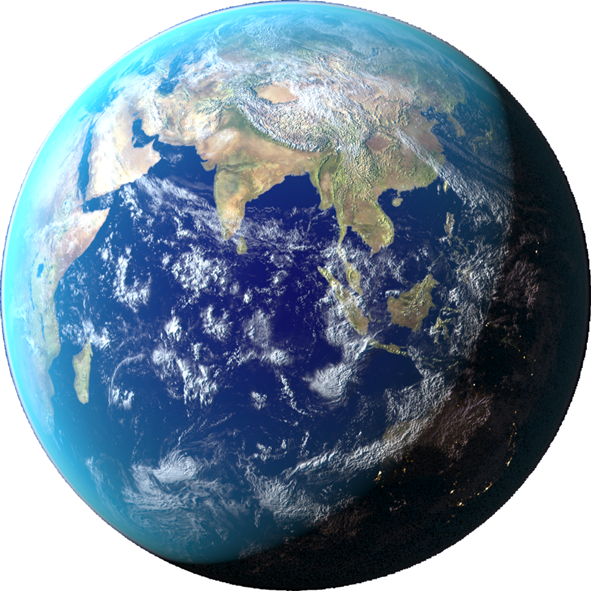
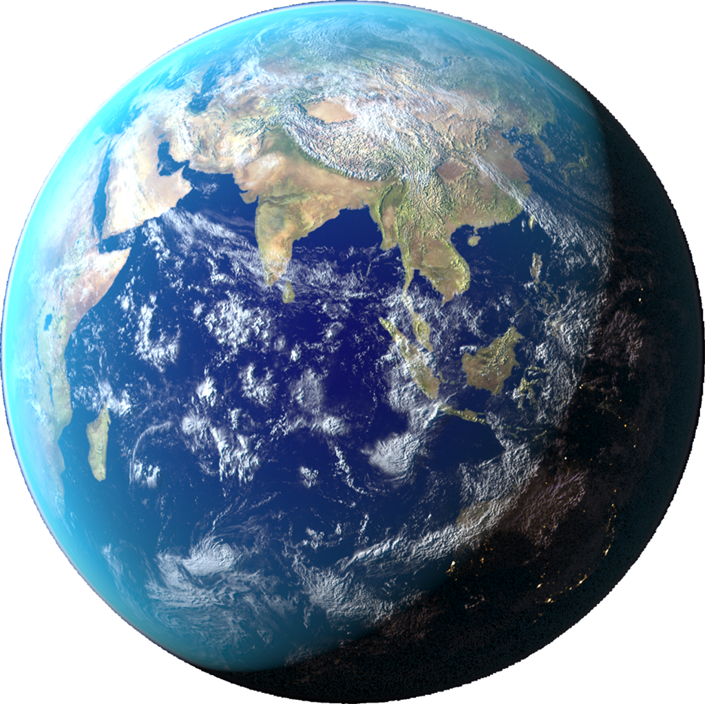

PLANET
BUMI
Bumi adalah planet ketiga dari Matahari yang merupakan planet terpadat dan terbesar kelima dari delapan planet dalam Tata Surya.
 

Awal
Bumi terbentuk sekitar 4,54 miliar tahun yang lalu, dan kehidupan sudah muncul di permukaannya paling tidak sekitar 3,5 miliar tahun yang lalu. Biosfer Bumi kemudian secara perlahan mengubah atmosfer dan kondisi fisik dasar lainnya, yang memungkinkan terjadinya perkembangbiakan organisme serta pembentukan lapisan ozon, yang bersama medan magnet Bumi menghalangi radiasi surya berbahaya dan mengizinkan makhluk hidup mikroskopis untuk berkembang biak dengan aman di daratan. Sifat fisik, sejarah geologi, dan orbit Bumi memungkinkan kehidupan untuk bisa terus bertahan.
Litosfer Bumi terbagi menjadi beberapa segmen kaku, atau lempeng tektonik, yang mengalami pergerakan di seluruh permukaan Bumi selama jutaan tahun. Lebih dari 70% permukaan Bumi ditutupi oleh air, dan sisanya terdiri dari benua dan pulau-pulau yang memiliki banyak danau dan sumber air lainnya yang bersumbangsih terhadap pembentukan hidrosfer. Kutub Bumi sebagian besarnya tertutup es-es padat di Antarktika dan es laut di paket es kutub. Interior Bumi masih tetap aktif, dengan inti dalam terdiri dari besi padat, sedangkan inti luar berupa fluida yang menciptakan medan magnet, dan lapisan tebal yang relatif padat di bagian mantel.
Bumi berinteraksi secara gravitasi dengan objek lainnya di luar angkasa, terutama Matahari dan Bulan. Ketika mengelilingi Matahari dalam satu orbit, Bumi berputar pada sumbunya sebanyak 366,26 kali, yang menciptakan 365,26 hari matahari atau satu tahun sideris. Perputaran Bumi pada sumbunya miring 23,4° dari serenjang bidang orbit, yang menyebabkan perbedaan musim di permukaan Bumi dengan periode satu tahun tropis (365,24 hari matahari). Bulan adalah satu-satunya satelit alami Bumi, yang mulai mengorbit Bumi sekitar 4,53 miliar tahun yang lalu. Interaksi gravitasi antara Bulan dengan Bumi merangsang terjadinya pasang laut, menstabilkan kemiringan sumbu, dan secara bertahap memperlambat rotasi Bumi.
Bumi adalah tempat tinggal bagi jutaan makhluk hidup, termasuk manusia. Sumber daya mineral Bumi dan produk-produk biosfer lainnya bersumbangsih terhadap penyediaan sumber daya untuk mendukung populasi manusia global. Wilayah Bumi yang dihuni manusia dikelompokkan menjadi 200 negara berdaulat, yang saling berinteraksi satu sama lain melalui diplomasi, pelancongan, perdagangan, dan aksi militer.
Nama dan Etimologi
Dalam bahasa Inggris modern, kata benda earth dikembangkan dari kata bahasa Inggris Pertengahan erthe (dicatat pada 1137), yang berasal dari kata bahasa Inggris Kuno eorthe (sebelum 725), sedangkan kata itu sendiri berasal dari kata Proto-Jermanik *erthō. Earth memiliki kata kerabat pada semua bahasa Jermanik lainnya, termasuk aarde dalam bahasa Belanda, Erde dalam bahasa Jerman, dan jord dalam bahasa Swedia, Denmark, dan Norwegia. Earth adalah perumpamaan untuk dewi paganisme Jermanik (atau Jörð dalam mitologi Norse, ibu dari dewa Thor).
Dalam bahasa Indonesia, kata bumi berasal dari bahasa Sanskerta bhumi, yang berarti tanah, dan selalu ditulis dengan huruf kapital ("Bumi"), untuk merujuk pada planet Bumi, sementara "bumi" dengan huruf kecil merujuk pada permukaan dunia, atau tanah.